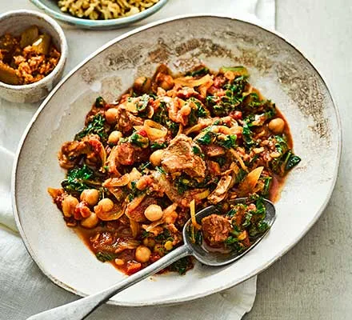

Slow Cooker Lamb Curry Recipe

Ingredients
- 1 large onion, halved and sliced
- 3 tbsp Madras curry paste
- 400g can chopped tomatoes
- 2 tsp vegetable bouillon powder
- 25g red lentils
- 210g can chickpeas (don’t drain)
- 1 tbsp grated ginger
- 1 tsp cumin seeds
- 1 cinnamon stick
- 75g curly kale
- 2 lean lamb steaks, fat removed, diced (about 240g)
- cooked brown rice, to serve
Preparation Time
- Preparation: 10 minutes
- Cooking: 6 hours
Instructions
- Put all of the ingredients into the slow cooker pot with a third of a can of water and stir well. Cover with the lid and chill in the fridge overnight.
- The next day, stir again, then cook on Low for 6 hrs until the lamb and vegetables are tender. Serve with brown rice.
Return to Main Page